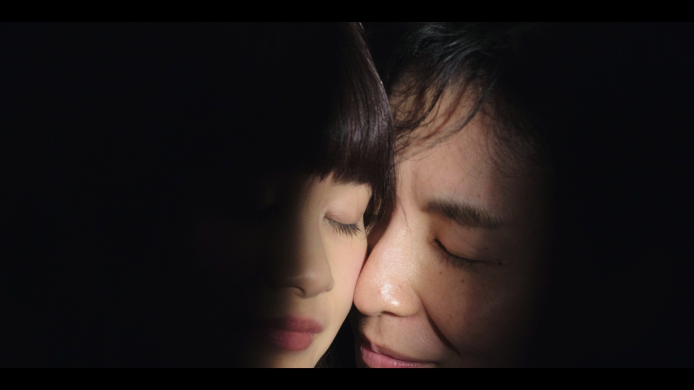

Tsuki is a teenage girl whose overprotective mother still treats her like a baby. Her comfortable existence has left Tsuki with a complete lack of social and survival skills. When her mother meets a man, Tsuki has to grow up quickly but when her mother abandons her, she takes refuge in a womb-like cupboard. Increasingly unable to distinguish reality from nightmare Tsuki's world starts to fragment with terrifying consequences.